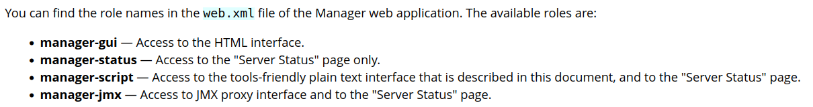
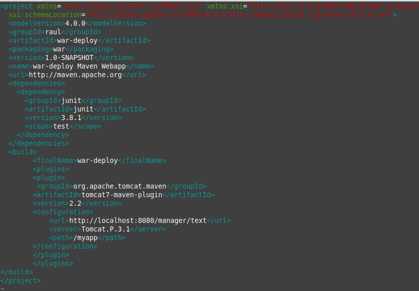

Práctica 3.1: Instalación de Tomcat
Introducción
Si consultamos el apartado de versiones de Tomcat en su página oficial, nos daremos cuenta de que no vamos a usar la última versión, la 10, para esta práctica, sino la anterior, la 9. La pregunta es casi inevitable:
¿Por qué?
En el enlace anterior vemos como desde su versión 9, Tomcat da soporta a Java 8 y superiores. Sin embargo, a partir de la versión 10.1.x, da soporte a Java 11 y superiores.
¿Qué significa esto?
En Java 9 se introdujeron novedades como un nuevo sistema de módulos (Jigsaw), entre otras.
En Java 11 se dio un paso más al haber renombrado completamente las rutas de paquetes javax. a jakarta.. Oracle, a pesar de haber hecho público el desarrollo de Java, no hizo lo mismo con su nombre.
Así las cosas, resulta que Java 8 puede que a día de hoy aún sea la más usada en proyectos reales. Dicho esto, podría realizarse un proceso de migración de un proyecto de Java 8 a Java 11 y utilizarlo en Tomcat 10.
No obstante, para Java 8 su soporte para uso comercial (pagando) acabó en Marzo de 2022, pero para uso no comercial sigue hasta 2030.
En conclusión, no es raro encontrarse en el mundo real un proyecto a desplegar realizado en Java 8. Podría realizarse una migración y los conceptos de despliegue que veremos seguirían aplicando. Así las cosas, por facilidad en la realización de las prácticas utilizaremos Tomcat 9 y el plugin oficial de Maven para Tomcat 7 para el despliegue (luego veremos el motivo).
Instalación de Tomcat
Esta práctica es muy sencilla y va a consistir en realizar la instalación del servidor de aplicaciones Tomcat 9, en una máquina virtual corriendo Debian 11 Bullseye.
Para ello, y como sugerencia, podéis apoyaros en este tutorial online, aunque sóis libres de consultar tantas fuentes como deseéis.
Obviamente, debéis utilizar vuestro propios usuarios y contraseña.
Instalación de Maven
Para instalar Maven en nuestro Debian tenemos, de nuevo, dos opciones:
-
Instalación mediante gestor de paquetes APT
-
Instalación manual
La primera, recomendada, es mucho más sencilla y automatizada (establece todos los paths y variables de entorno), aunque con la segunda se podría conseguir un paquete más actualizado.
Ambos métodos vienen explicados aquí
Si decidimos seguir el primer método, el más sencillo, vemos que es tan simple como actualizar los repositorios:
sh
sudo apt update
E instalar Maven
sh
sudo apt install maven
Para comprobar que todo ha ido correctamente, podemos ver la versión instalada de Maven:
sh
maven --v
Configuración de Maven
Para poder realizar despliegues en nuestro Tomcat previamente instalado, necesitamos realizar la configuración adecuada para Maven. Ya sabemos que esto en Linux significa editar los archivos de configuración adecuados. Vamos a ello.
-
En primer lugar necesitamos asegurarnos de que en el apartado anterior de la práctica hemos añadido todos los usuarios necesarios, así como sus respectivos roles.
Los roles utilizados por Tomcat vienen detallados en su documentación, que merece ser consultada:

En dicha documentación se nos indica que, por temas de seguridad, es recomendable no otorgar los roles de manager-script o manager-jmx al mismo usuario que tenga el rol de manager-gui.
Info
Tendremos dos usuarios, uno para la GUI y otro exclusivamente para hacer los deploys de Maven.
Así las cosas, modificamos el archivo
/etc/tomcat9/tomcat-users.xmlacorde a nuestras necesidades (los nombres de usuario y contraseña deberán ser los que elijáis para vosotros):
-
Editar el archivo
/etc/maven/settings.xmlpara indicarle a Maven, un identificador para el servidor sobre el que vamos a desplegar (no es más que un nombre, ponedle el nombre que consideréis), así como las credenciales. Todo esto se hará dentro del bloque servers del XML:
-
Ahora debemos modificar el
POMdel proyecto para que haga referencia a que el despliegue se realice con el plugin de Maven para Tomcat.
yaml
theme:
features:
- content.code.annotate # (1)
-
:man_raising_hand: I'm a code annotation! I can contain
code, formatted text, images, ... basically anything that can be written in Markdown.Info
No existen plugins oficiales para Tomcat más allá de la versión 7 del servidor. No obstante, el plugin para Tomcat 7 sigue funcionando correctamente con Tomcat 9.
Otra opción sería utilizar el plugin Cargo

Donde lo que añadimos es el bloque
yaml <build> <finalName>war-deploy</finalName> <!-- (1) --> <plugins> #(1) <plugin> <groupId>org.apache.tomcat.maven</groupId> <artifactId>tomcat7-maven-plugin</artifactId> <version>2.2</version> <configuration> <url>http://localhost:8080/manager/text</url> (2) <server>Tomcat.P.3.1</server> (3) <path>/myapp</path> (4) </configuration> </plugin> </plugins> </build>1. Nombre final del ejecutable .jar que se va a generar- URL del servidor Tomcat donde se hará el despliegue. Como en nuestro caso Maven y Tomcat están en el mismo servidor, la URL corresponde a localhost.
Esta URL debe ir seguida por
/manager/text, tal y como leemos en la documentación del plugin.
- URL del servidor Tomcat donde se hará el despliegue. Como en nuestro caso Maven y Tomcat están en el mismo servidor, la URL corresponde a localhost.
Esta URL debe ir seguida por
Referencias
JSF 3.0 en Tomcat 10 con Java 11
Install and configure jdk11 + Tomcat + Maven under Linux system